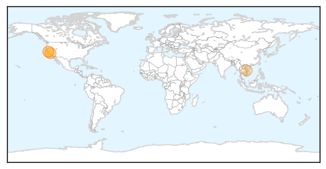
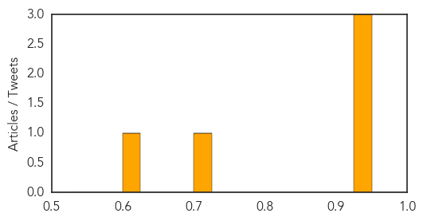
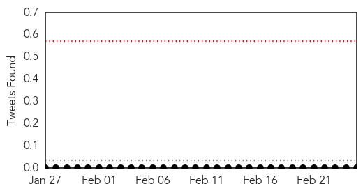
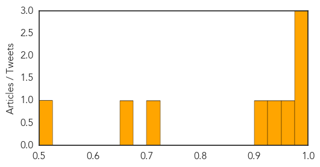

West Nile Virus
30-Day Web Trend
0 alerts, 0 warnings

30-Day Twitter Trend
0 alerts, 0 warnings

Article Locations
Article Confidences
Top Articles:
- 0.947
- Is a Wave of Poliolike Symptoms in California Cause for Alarm?
- 0.945
- Overlooked Virus May Be Cause Of Paralyzing Disease In California : Shots
- 0.931
- Overlooked virus may be cause of paralyzing disease in California
- 0.706
- Researchers Look For Clues To Polio-Like Illness In California Children
- 0.613
- Researchers Look For Clues To Polio-Like Illness In California Children
Top Tweets:
-
No tweets found for Feb 25, 2014
Meningitis
30-Day Web Trend
16 alerts, 3 warnings

30-Day Twitter Trend
0 alerts, 0 warnings

Article Locations

Article Confidences
Top Articles:
- 0.988
- 20 kids affected with polio-like illness cases
- 0.986
- Polio-Like Illness Found in Five California Children – New Day
- 0.982
- 'About 20' cases of polio-like illness found in California
- 0.956
- Probable meningococcal meningitis kills three in Nice, France
- 0.929
- Incidence of typhoid on the rise in twin cities
- 0.914
- Novartis' MenB vaccine, Bexsero to use for vaccination programme at University of California
- 0.712
- UCSB Begins Mass Meningitis B Vaccinations for Students, Staff
- 0.662
- ‘Parents of newborns should know all the symptoms of meningitis’
- 0.503
- Madisonville Student Diagnosed With Meningitis
Top Tweets:
-
No tweets found for Feb 25, 2014